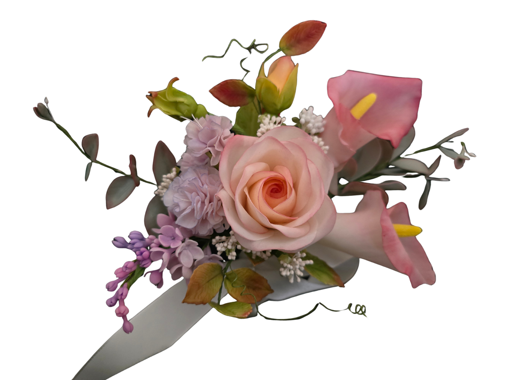

Work Samples


作品ギャラリー

好きな花から、一輪ずつ学べる入口レッスン
シュガーフラワーは、砂糖から作る美しい花の工芸です。まずは自分の好きな花を一輪だけ作る体験から始められます。ライラック・スイートピー・パンジー・カサブランカ、4種の花から選んでご参加いただけます。
「花ごとのレッスン」は、シュガーフラワーを初めて体験する方のための入口レッスンです。1回完結で、好きな花を1輪だけ作ります。
花の種類によって難易度が異なります。ライラック・スイートピーは初めての方に適しており、パンジー・カサブランカは少し経験を積んだ方向きです。
シュガーフラワーをはじめて体験する方に最も適した入口レッスン。小さな花びらを一枚ずつ形成し、自然な動きをつける練習から始まります。ライラックは多弁の花なので、繰り返し作業の中でペーストの扱い方を身につけられます。
繊細に波打つ花びらが特徴のスイートピー。薄く伸ばしたペーストにフリルをつける技術を学びます。形成自体はライラックより少し複雑ですが、完成したときの繊細さが魅力のレッスンです。
大きく広がる5枚の花びらに、ベルベット調の模様を描くパンジー。ダスティング（着色）技術が求められる、表現力の高いレッスンです。少し経験を積んだ方に向いています。
大輪で圧倒的な存在感を持つカサブランカ。6枚の大きな花びら、長いしべ、つぼみまで作り上げる中級向けレッスンです。完成作品の美しさと達成感は格別です。

ライラックとスイートピーは初心者向けです。パンジーとカサブランカは少し経験があると安心ですが、丁寧にサポートします。
必要な道具・材料はすべてご用意しています。手ぶらでお越しいただけます。ただし、動きやすい服装でお越しください。
はい。各レッスンは1回完結です。所要時間はおよそ2〜3時間を予定しています。
同日での複数受講は難しいため、別日程でのご参加をお願いしています。